# load packages
library(tidyverse)
library(DESeq2)
library(ggrepel)
library(pheatmap)
# read in and manage metadata
meta <- read.csv("../../metadata/SraRunTable.txt") %>%
mutate(population=str_replace(population, "Eliza.*", "ER")) %>% # change population names to be simpler
mutate(population=str_replace(population, "King.*", "KC")) %>% # change population names to be simpler
mutate(pcb_dosage = case_when(pcb_dosage == 0 ~ "control", pcb_dosage > 0 ~ "exposed")) %>% # change pcb dosage to control vs exposed
filter(population %in% c("ER","KC")) %>%
select(Run, population, pcb_dosage)
# create sample table
directory <- "../../results/04_counts/counts"
sampleFiles <- list.files(directory, pattern = ".*counts$")
all( str_remove(sampleFiles, ".counts") == meta[,1] )
sampleTable <- data.frame(
sampleName = meta$Run,
fileName = sampleFiles,
population = meta$population,
dose = meta$pcb_dosage
)
# write out sampleTable
sampleTable
# read summary number table, transpose it so samples are rows
sn <- read.table("../../results/03_align/samtools_stats/SN.txt", header=TRUE, sep="\t") %>% t()
rownames(sn) <- str_remove(rownames(sn), ".*align.")
colnames(sn) <- str_remove_all(colnames(sn), "[:()%]") %>% str_remove(" $") %>% str_replace_all(" ","_")
sn <- data.frame(sampleID=rownames(sn), sn)
#combine sample information with summary numbers
sn <- left_join(sampleTable, sn, join_by(sampleName == sampleID))
# read the data in:
ddsHTSeq <- DESeqDataSetFromHTSeqCount(
sampleTable = sampleTable,
directory = directory,
design = ~ population*dose
)
# filter out previously identified bad samples
badSamples <- c("SRR12475446","SRR12475449")
sn <- sn[!(sn$sampleName %in% badSamples),]
meta <- meta[!(meta$Run %in% badSamples),]
sampleTable <- sampleTable[!(sampleTable$sampleName %in% badSamples),]
ddsHTSeq <- ddsHTSeq[,!(colnames(ddsHTSeq) %in% badSamples)] 22 Differential Expression Analysis
| Learning Objectives: |
| Customize your shell |
At this stage we have read our count data into R and done some basic preliminary quality checks. We have learned how and where the count data are stored, how to extract, normalize and transform the count data, how to make some plots to visualize it, and how we can filter out problematic individuals.
We should now be confident that we we have a reasonably solid data set and are ready to jump into statistical analysis.
In our case, the primary analysis we’ll do is differential expression analysis. The essence of this is asking whether or not, for a given gene, different treatments have different levels of expression, or whether changes in expression across a particular treatment vary by some secondary factor.
To make this concrete, in this data set, we are primarily interested in two questions: what is the transcriptomic response to toxicant exposure, and does it differ between the two populations? The response, and whether and how it differs between tolerant and sensitive populations may give us some insight into the mechanism of tolerance.
22.1 Getting started
In this chapter we’ll pick up with our data objects as if they have been read in and filtered as in the previous chapter. You should have been creating an R script as you went through the previous chapter. You should close your RStudio project without saving any workspace objects (save your script, of course) and execute your script from top to bottom to make sure it’s doing what you want without errors before proceeding. An abbreviated version of what we’ve done so far looks like this:
22.2 The big picture
As we saw in the first chapter in this module, we can fit DESeq2’s model and extract one of our comparison’s of interest in a very simple way:
dds <- DESeq(ddsHTSeq)estimating size factorsestimating dispersionsgene-wise dispersion estimatesmean-dispersion relationshipfinal dispersion estimatesfitting model and testingres <- results(dds, contrast=c("dose","exposed","control"))
summary(res)
out of 22691 with nonzero total read count
adjusted p-value < 0.1
LFC > 0 (up) : 0, 0%
LFC < 0 (down) : 1, 0.0044%
outliers [1] : 10, 0.044%
low counts [2] : 0, 0%
(mean count < 0)
[1] see 'cooksCutoff' argument of ?results
[2] see 'independentFiltering' argument of ?resultsOur new object dds is the same type as ddsHTSeq, but now contains size factors for each sample, and fitted model parameters for each gene. These simple commands mask quite a lot of complexity, however, and we’re going to need to dig in to understand a bit better what’s happening.
22.3 The DESeq2 model
DESeq2 implements a generalized linear model (GLM) approach to analyzing the count data. The details can be found in the paper. While this is not a statistics course, it pays to understand a little about what’s going on, so you can have some intuition about the results. We’re going to get a tiny bit math-y below, but please try to follow along. We’re going to try to make it concrete by pulling actual numbers out of our data object.
The model is essentially trying to explain the count data we have observed as a function of the treatments. We can call our raw count matrix K, with genes in rows i and samples in columns k. This is what we could extract with counts(dds), and an individual cell in the matrix, say K2,1, could be extracted like this:
counts(dds)[2,1][1] 897Under the fitted model, the count in a given cell is expected to be drawn from a negative binomial distribution with a mean μi,j, and a dispersion parameter αi. That is to say, each cell in the matrix has it’s own expected mean that is derived from the experimental condition and the sample size factor, and each gene has its own dispersion parameter.
The negative binomial distribution is used in this case to model random variability in the counts. That is to say, we have an expected value for the cell, μi,j, but due to sampling variance and real biological variations unrelated to experimental conditions, we expect some noise in our actual observations. The negative binomial accomodates that noise.
So what would that sampling variation look like in the case of count K2,1? We can extract the dispersion parameter for gene 2 using a helper function mcols() like this:
mcols(dds,use.names=TRUE)$dispersion[2][1] 0.07108442The value can be directly excavated from here dds@rowRanges@elementMetadata@listData$dispersion[2].
Let’s pretend that 897 is the expected mean (we could figure out the predicted mean from the model parameters, but we’re not ready for that yet…). Using these numbers we can use the R function rnbinom() to generate random numbers from that distribution and see what it looks like.
# draw 10000 random deviates
simvals <- rnbinom(mu=897, size=1/0.0710844, n=10000)
# get quantiles
quantile(simvals, prob=c(0.025,0.975)) 2.5% 97.5%
480 1435 # make a histogram using base R
hist(simvals, breaks=100)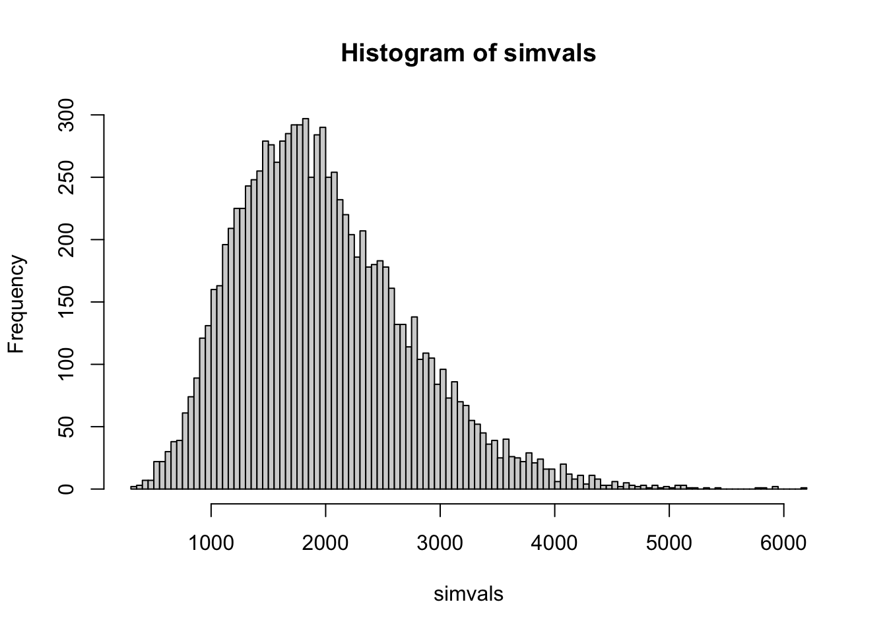
rnbinom() parameterizes the negative binomial slightly differently than DESeq2, using a size parameter, which is the inverse of the dispersion. mu is our mean, or expected value. We can see that for this gene we would expect quite a lot of variation among biological replicates, with 95% of simulated values falling between about 500 and 1400. You can imagine that for this gene it might be difficult to detect changes in expression without many replicates, or a pretty large treatment effect.
To get the precise 0.025 and 0.975 quantiles we could also do qnbinom(mu=897, size=1/0.0710844, p=c(0.025,0.975)). R has a standard set of probability functions for different distributions built in. Try ?rnbinom or ?rnorm.
Ok, so where do the expected values μi,j come from? They are the product of two quantities:
\[ μ_{i,j} = s_{i,j} * q_{i,j}\]
si,j are the size factors we saw how to calculate in the previous chapter. In our analysis, they are the same for all genes, i within a sample j, so we could just write sj instead.
That leaves qi,j. This is the expected (not observed) mean of the normalized counts for the group of samples to which j belongs (e.g. ER control). The DESeq2 paper describes qi,j as a quantity “proportional to the concentration of cDNA fragments from the gene in the sample”.
The qi,j values are the consequence of the fitted linear model parameters.
\[ log_2(q_{i,j}) = \sum_{r}{x_{j,r}β_{i,r}}\] The linear model parameters are in log2 space, so they will have a natural interpretation in terms of log2-fold changes, as we will see.
Now we have two more quantities to deal with. We promise we’re near the end.
x is our model matrix. Remember, we have our samples j, which are in the rows of this matrix (not the columns as in the count matrix), and now we have our linear model predictor variables r in the columns. Because we are working with categorical variables (exposed vs control, or KC vs ER) these are indicator variables, and have values 0 or 1. They indicate whether a parameter estimated in the model should be applied when predicting the count for a given sample.
We can see our model matrix like this:
attr(dds, "modelMatrix") Intercept population_KC_vs_ER dose_exposed_vs_control
SRR12475447 1 0 0
SRR12475448 1 0 0
SRR12475450 1 0 0
SRR12475451 1 0 1
SRR12475452 1 0 1
SRR12475453 1 0 1
SRR12475454 1 0 1
SRR12475455 1 0 1
SRR12475456 1 0 1
SRR12475468 1 1 0
SRR12475469 1 1 0
SRR12475470 1 1 0
SRR12475471 1 1 0
SRR12475472 1 1 0
SRR12475473 1 1 1
SRR12475474 1 1 1
SRR12475475 1 1 1
SRR12475476 1 1 1
populationKC.doseexposed
SRR12475447 0
SRR12475448 0
SRR12475450 0
SRR12475451 0
SRR12475452 0
SRR12475453 0
SRR12475454 0
SRR12475455 0
SRR12475456 0
SRR12475468 0
SRR12475469 0
SRR12475470 0
SRR12475471 0
SRR12475472 0
SRR12475473 1
SRR12475474 1
SRR12475475 1
SRR12475476 1
attr(,"assign")
[1] 0 1 2 3
attr(,"contrasts")
attr(,"contrasts")$population
[1] "contr.treatment"
attr(,"contrasts")$dose
[1] "contr.treatment"We have four parameters in this linear model: Intercept, population_KC_vs_ER, dose_exposed_vs_control, populationKC.doseexposed. So for sample SRR12475447, which is an ER control sample we can see only the intercept is applied (1 in the first column, 0’s in the other three). For sample SRR12475452, an ER exposed sample, we apply Intercept and dose_exposed_vs_control. Sample SRR12475469 (a control KC sample), we apply Intercept (as we do to all samples), population_KC_vs_ER, which alters the prediction to account for baseline population differences, and nothing else.
In the current formulation of this model, ER is first level in the population factor, and control is the first level in the dose factor, so it’s treated as the baseline expression level (we’ll see how to change that below, as it isn’t ideal here, as the sensitive population, KC is better thought of as the reference, or baseline level).
You should notice that we have a parameter to account for baseline population differences, a parameter to account for the PCB dose response, and a third parameter populationKC.doseexposed. What is that one doing? That is called an interaction term, and it allows KC to have a different dose response from ER (or much less sensibly you could say it allows dosed fish to have a different population response than control). We’ll see more below on how to specify these parameters.
Our next and final quantity, βi,r has genes i in rows, and model parameters r in columns. The contents are the actual estimates of these parameters.
We can look at them by extracting them from a larger table like this:
params <- colnames(attr(dds, "modelMatrix"))
mcols(dds)[1:10,params]DataFrame with 10 rows and 4 columns
Intercept population_KC_vs_ER dose_exposed_vs_control
<numeric> <numeric> <numeric>
ENSFHEG00000000002 NA NA NA
ENSFHEG00000000003 10.4418 0.603807 0.18111726
ENSFHEG00000000004 NA NA NA
ENSFHEG00000000005 11.3524 0.387069 0.31806952
ENSFHEG00000000006 NA NA NA
ENSFHEG00000000007 11.9504 -0.195433 0.00516279
ENSFHEG00000000008 NA NA NA
ENSFHEG00000000009 NA NA NA
ENSFHEG00000000010 NA NA NA
ENSFHEG00000000011 11.8532 -0.530119 -0.11887793
populationKC.doseexposed
<numeric>
ENSFHEG00000000002 NA
ENSFHEG00000000003 -0.4581863
ENSFHEG00000000004 NA
ENSFHEG00000000005 -0.9362239
ENSFHEG00000000006 NA
ENSFHEG00000000007 -0.0771317
ENSFHEG00000000008 NA
ENSFHEG00000000009 NA
ENSFHEG00000000010 NA
ENSFHEG00000000011 0.0730962The NA values are for genes that have all zero counts and therefore can’t be modeled at all.
So, for a given gene, for a given sample (say, gene 2, sample 5), we can get the value of log2(qi,j) by multiplying our four predictor variables xj by our four estimated model parameters βr and summing them:
params <- colnames(attr(dds, "modelMatrix"))
xr <- unlist(attr(dds, "modelMatrix")[5,])
br <- unlist(mcols(dds)[2,params])
sum( xr * br )[1] 10.62295Compare that to the observed value (normalized and in log2 space), which is expected to deviate by some amount, according to the negative binomial distribution:
log(counts(dds, normalized=TRUE)[2,5], 2)[1] 10.99801We can use a little matrix multiplication (the %*% operator) to get the q values for all j for a single gene, but this time let’s use a gene that your instructors know is going to be important, and compare to the log2-scaled normalized values.
gene <- "ENSFHEG00000010510"
data.frame(
predicted=attr(dds, "modelMatrix") %*% unlist(mcols(dds)[gene,params]),
observed=log(counts(dds, normalized=TRUE)[gene,],2)
)So this is more or less what we hope to see, a good correspondence of the model with the data, with some noise in the observed values compared to the predicted ones. In the case of this gene, we also see that one of our experimental groups (KC, exposed) has dramatically higher expression for this gene than everyone else (remember, this is log2 scaled. 13 vs 5 is actually a 2^8)
So what’s happening here? The model matrix x shows which parameters are applied to which samples to derive the sample q value. We sum the product of the model matrix and the parameters β for each sample. Because we’re doing this in log space, we are actually multiplying these values together.
(log(4,base=2) + log(4,base=2)) == log( 4 * 4, base=2)[1] TRUESo the intercept can be interpreted as the q value, in log2 space for the reference level group in the experiment, and each estimated parameter is the log2 of some fold change by which you multiply the intercept (possibly in combination with other estimated parameters) in order to get the q value for some other group. This will very naturally allow us to extract log2 fold-changes attributable to different comparisons we want to make later.
22.4 Specifying the experimental design
Ok, so we’ve now talked a lot about the parameters that got estimated, and how they are connected through our linear model, the scale factors, and the negative binomial model to the counts we’ve actually observed.
But how was that model structure chosen? With the design argument when we read the data in:
ddsHTSeq <- DESeqDataSetFromHTSeqCount(
sampleTable = sampleTable,
directory = directory,
design = ~ population*dose
)That formula follows R’s general formula interface. It’s basically saying we want to model our count data (implicitly on the left side of ~) as a function of the factors population and dose. We are multiplying them together here because we want to include the interaction term. If we wanted to be more explicit in setting the interaction term, we could write ~ population + dose + population:dose, which is equivalent to just doing *. If we felt we didn’t need the interaction term because we expected the dose effect to be the same in both populations, we would use the formula ~ dose + population. That would produce a model matrix with 3 parameters instead of 4:
model.matrix(~ population + dose, sampleTable) (Intercept) populationKC doseexposed
2 1 0 0
3 1 0 0
5 1 0 0
6 1 0 1
7 1 0 1
8 1 0 1
9 1 0 1
10 1 0 1
11 1 0 1
12 1 1 0
13 1 1 0
14 1 1 0
15 1 1 0
16 1 1 0
17 1 1 1
18 1 1 1
19 1 1 1
20 1 1 1
attr(,"assign")
[1] 0 1 2
attr(,"contrasts")
attr(,"contrasts")$population
[1] "contr.treatment"
attr(,"contrasts")$dose
[1] "contr.treatment"This is emphatically not what we want in this experiment, though, because we are specifically interested in the differential response between these populations. In experiments with multiple factors, the interactions between the factors are very often the thing that is of greatest interest.
Specifying the model for a given experiment can be quite complicated. If you look through the bioconductor help forum posts tagged with DESeq2, you’ll see one of the most common questions is about how to specify some particular complex experimental design. For the most common types, this document is a great reference.
This is also a really great general discussion of how to create design matrices for potentially complicated experimental designs for gene expression studies. It’s focused on edgeR, not DESeq2, but many of the principles apply equally.
22.4.1 An alternative way to specify the design
There is an alternative way to specify the model. In cases where there are lots of levels in multiple treatments (perhaps when you have samples from 8 populations?) you can simply create a single aggregate factor. Starting from scratch, you would put that factor in sampleTable and then specify ~ aggregate_factor as your design. To demonstrate this by updating an existing object:
# create a second data object to demonstrate
ddsHTSeq2 <- ddsHTSeq
# add the new aggregate factor and print it
ddsHTSeq2$fac <- factor(paste(ddsHTSeq2$population, ddsHTSeq2$dose, sep="."))
ddsHTSeq2$fac [1] ER.control ER.control ER.control ER.exposed ER.exposed ER.exposed
[7] ER.exposed ER.exposed ER.exposed KC.control KC.control KC.control
[13] KC.control KC.control KC.exposed KC.exposed KC.exposed KC.exposed
Levels: ER.control ER.exposed KC.control KC.exposed# update the design
design(ddsHTSeq2) <- ~ fac
# fit the model
dds2 <- DESeq(ddsHTSeq2)estimating size factorsestimating dispersionsgene-wise dispersion estimatesmean-dispersion relationshipfinal dispersion estimatesfitting model and testing# print the model matrix
attr(dds2, "modelMatrix") Intercept fac_ER.exposed_vs_ER.control fac_KC.control_vs_ER.control
SRR12475447 1 0 0
SRR12475448 1 0 0
SRR12475450 1 0 0
SRR12475451 1 1 0
SRR12475452 1 1 0
SRR12475453 1 1 0
SRR12475454 1 1 0
SRR12475455 1 1 0
SRR12475456 1 1 0
SRR12475468 1 0 1
SRR12475469 1 0 1
SRR12475470 1 0 1
SRR12475471 1 0 1
SRR12475472 1 0 1
SRR12475473 1 0 0
SRR12475474 1 0 0
SRR12475475 1 0 0
SRR12475476 1 0 0
fac_KC.exposed_vs_ER.control
SRR12475447 0
SRR12475448 0
SRR12475450 0
SRR12475451 0
SRR12475452 0
SRR12475453 0
SRR12475454 0
SRR12475455 0
SRR12475456 0
SRR12475468 0
SRR12475469 0
SRR12475470 0
SRR12475471 0
SRR12475472 0
SRR12475473 1
SRR12475474 1
SRR12475475 1
SRR12475476 1
attr(,"assign")
[1] 0 1 1 1
attr(,"contrasts")
attr(,"contrasts")$fac
[1] "contr.treatment"You can see that in contrast to our original model matrix, this one only contains parameters that compare a single experimental group to the reference level, ER.control. These will all be interpreted as log2 fold changes from ER.control to some other factor. Note that we still have 4 parameters, and that we will still be able to perform the same tests as with the design used above. Below we’ll see how to extract comparisons and interactions we’re interested in using both approaches.
22.4.2 Resetting the reference level
At this point it is hopefully becoming clear that the way we have specified the model, the Intercept parameter is the expected normalized expression level for the “reference” group in our experiment. The other parameters explain expression differences in other groups with respect to that one. In this case, examining the model matrix you can see that group is the ER control group. For our actual experiment, that’s not ideal. ER is a tolerant population, and while this study is more of a “natural” experiment than controlled one, it makes more sense to think of the derived tolerance trait as a “treatment” and the ancestral sensitivity as a “control”. While there is no statistical consequence to changing the reference levels (i.e. the same genes will still be significant for the same terms and have the same absolute effect sizes), the sign of the log2 fold changes we see as a result will change.
It’s easy to check what the reference levels are, and change them as necessary.
ddsHTSeq$population [1] ER ER ER ER ER ER ER ER ER KC KC KC KC KC KC KC KC KC
Levels: ER KCddsHTSeq$dose [1] control control control exposed exposed exposed exposed exposed exposed
[10] control control control control control exposed exposed exposed exposed
Levels: control exposedThe vectors in dds$population and dds$dose are R’s factor data type. They are displayed as character strings, but the underlying representation is as integers, and each unique value is a “level” in the factor. When we created sampleTable, the dose and population columns were character data. When we created the ddsHTSeq object, DESeq2 coerced the character data to factor data. When it did that, it took all the unique values, sorted them alphanumerically and used those as the factor levels. For DESeq2, the first factor level is treated as the reference level. In the case of dose, that level is control, which is what we want. For population, that level is ER, but we want it to be KC.
We can reset the levels by replacing the population factor with a new factor vector giving with the levels in the desired order.
ddsHTSeq$population <- factor(ddsHTSeq$population, levels=c("KC","ER"))
ddsHTSeq$population [1] ER ER ER ER ER ER ER ER ER KC KC KC KC KC KC KC KC KC
Levels: KC ER# rerun the analysis to get the updated results
dds <- DESeq(ddsHTSeq)estimating size factorsestimating dispersionsgene-wise dispersion estimatesmean-dispersion relationshipfinal dispersion estimatesfitting model and testingAnd if we extract our model matrix now, we should see that KC control is the reference group
attr(dds, "modelMatrix") Intercept population_ER_vs_KC dose_exposed_vs_control
SRR12475447 1 1 0
SRR12475448 1 1 0
SRR12475450 1 1 0
SRR12475451 1 1 1
SRR12475452 1 1 1
SRR12475453 1 1 1
SRR12475454 1 1 1
SRR12475455 1 1 1
SRR12475456 1 1 1
SRR12475468 1 0 0
SRR12475469 1 0 0
SRR12475470 1 0 0
SRR12475471 1 0 0
SRR12475472 1 0 0
SRR12475473 1 0 1
SRR12475474 1 0 1
SRR12475475 1 0 1
SRR12475476 1 0 1
populationER.doseexposed
SRR12475447 0
SRR12475448 0
SRR12475450 0
SRR12475451 1
SRR12475452 1
SRR12475453 1
SRR12475454 1
SRR12475455 1
SRR12475456 1
SRR12475468 0
SRR12475469 0
SRR12475470 0
SRR12475471 0
SRR12475472 0
SRR12475473 0
SRR12475474 0
SRR12475475 0
SRR12475476 0
attr(,"assign")
[1] 0 1 2 3
attr(,"contrasts")
attr(,"contrasts")$population
[1] "contr.treatment"
attr(,"contrasts")$dose
[1] "contr.treatment"Again, this won’t actually change which genes are significant, or the absolute effect sizes, but it will change the sign of some log2 fold changes, making interpretation somewhat more intuitive.
22.5 Dispersion parameter estimation
We need to cover one last topic that is somewhat unique to RNA-seq analysis. We’ve seen so far that our linear model predicts the expected mean of normalized counts for each group of samples, and that sampling variance around those means is accounted for with a negative binomial model with two parameters: the mean, and a dispersion parameter. Since this isn’t a statistics course we’re not going into the details of how all the parameters are estimated, but it is helpful to understand a bit about what’s happening with the dispersion parameter estimates, as it is fairly unique.
Many RNA-seq data sets suffer from low replication. Considering a single gene in isolation, typical sample sizes of 3-6 would be underpowered for detecting changes in expression for all but the most extreme fold changes. This is in part because having only a handful of replicates make it difficult to estimate the amount of variability expected among replicates. A key innovation in RNA-seq analysis has been the recognition that genes with similar expression levels tend to have similar levels of variability within an experiment.
Because so many genes have measurements, most software for differential expression analysis “borrows” information across genes with similar expression levels to estimate that variability. This type of information is referred to as an empirical Bayesian approach. It’s Bayesian because it relies on information that is not strictly part of the observed data (i.e. the dispersion parameter for one gene is estimated using information from other genes), which is to say, a prior probability distribution. and “empirical” refers to the fact the “prior” is drawn from data that are part of the experiment. The empirical Bayesian approach of estimating the prior from the data has occasionally been a point of contention in statistics (strictly speaking the prior is supposed to be prior information), but in practice it seems to work very well in RNA-seq studies.
So how does this work in DESeq2? When we run the DESeq() wrapper function, it printed these messages:
gene-wise dispersion estimates
mean-dispersion relationship
final dispersion estimatesWhat’s happening is that DESeq2 first estimates dispersion parameters for each gene in isolation. Then it models the dispersion parameters as a function of mean expression level. Then it shrinks the gene-wise dispersion estimates toward the mean estimate for genes with similar expression levels. You can think of the final dispersion parameter estimate for a given gene as a compromise between what the data for that gene say in isolation, and what the mean dispersion parameter estimate is for genes with similar expression levels. If there is a lot of signal in the data for a particular dispersion parameter, it will resist shrinkage. If the signal is weak, it will be pushed much closer to the mean for genes with similar expression levels.
DESeq2 has a function for plotting what it’s done:
plotDispEsts(dds)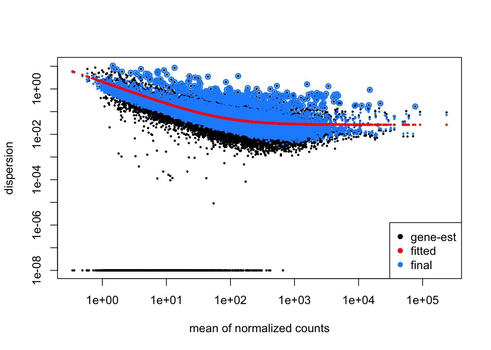
In this plot, you can see the original gene-wise estimates in black, the mean-dispersion trend line in red, and the shrunken estimates in blue, which have generally all been moved closer to the trend line. Outlier estimates on the high end are not shrunken (black points circled in blue) as this could raise false discovery rates by underestimating the variability for those genes. You can also access the dispersion parameter estimates in the table returned by mcols(dds) as we saw above.
22.6 Extracting results
Now that we’ve fitted the GLM to each gene in our dataset, how do we extract significance tests for hypotheses we’re interested in? We saw above the results() function. It generates a table. To get the results for “dose_exposed_vs_control” we can do:
res <- results(dds, name="dose_exposed_vs_control")
head(res)log2 fold change (MLE): dose exposed vs control
Wald test p-value: dose exposed vs control
DataFrame with 6 rows and 6 columns
baseMean log2FoldChange lfcSE stat pvalue
<numeric> <numeric> <numeric> <numeric> <numeric>
ENSFHEG00000000002 0.00 NA NA NA NA
ENSFHEG00000000003 1732.38 -0.2770687 0.259030 -1.069639 0.2847818
ENSFHEG00000000004 0.00 NA NA NA NA
ENSFHEG00000000005 2967.33 -0.6181536 0.370535 -1.668275 0.0952611
ENSFHEG00000000006 0.00 NA NA NA NA
ENSFHEG00000000007 3674.54 -0.0719688 0.183723 -0.391725 0.6952618
padj
<numeric>
ENSFHEG00000000002 NA
ENSFHEG00000000003 0.704715
ENSFHEG00000000004 NA
ENSFHEG00000000005 0.460069
ENSFHEG00000000006 NA
ENSFHEG00000000007 0.917123Because we have a model with an interaction term, this gives the results for the exposed vs control comparison for only the KC population. The table itself has 6 columns:
- baseMean: the mean of the normalized counts
- log2FoldChange:the log2Fold change for the comparison made
- lfcSE: standard error of the l2FC
- stat: By default DESeq2 does a Wald test to ask if the L2FC differs from zero. This is the test statistic.
- pvalue: a standard p-value.
- padj: an adjusted p-value controlling for false discovery rates. More on this shortly.
Columns 2 and 6 are the most important ones here. The log2FoldChange is, in this case, log2(KC.exposed / KC.control).
22.6.1 False discovery rate correction
The interpretation of p-values is typically defined as the probability of observing a test statistic equal to or more extreme than the one actually observed under the null model. The test statistic here is the Wald statistic. When considering a single test, scientists often use 0.05 as the significance threshold. It means that you only expect your null hypothesis to produce a test result like the one you’ve observed 5% of the time, and in many cases, scientists are happy to say a p-value < 0.05 is evidence against the null model.
In genomics, however, we often do many tests. If we tested, say, 10,000 genes, setting the significance threshold at p <= 0.05, even if there were no biological effect, we would expect around 500 genes to be found significant. All of them would. be false discoveries. If instead in our 10,000 genes there were 1000 genes with biological effects strong enough to pass the significance threshold, then we would expect to find 1000 + 0.05 * 9000 = 1450 genes significant, for a 31% false discovery rate. In practice, we don’t know in advance how many of our tests are true discoveries and how many are false, and you can imagine this makes interpreting large collections of p-values quite problematic.
To deal with this issue, methods have been developed that adjust the p-values to account for false discoveries. The adjusted p-value, has a very different interpretation. An adjusted p-value is interpreted as the expected frequency of false positive tests when all tests with that value or lower are taken as significant. If we set our adjusted p-value threshold at 5% and as a result reject the null hypothesis for 100 tests, we predict 5 of those will be false positives.
There are many methods to produce adjusted p-values, but they all use the observed distribution of p-values to try to estimate the fraction of false positives across the range, and then adjust them accordingly. By default, the results() function uses the Benjamini-Hochberg procedure. R has a function p.adjust() that implements many methods for this, including Benjamini-Hochberg, though beware its default method is not an FDR correction, but a family-wise error rate correction, where the adjusted p-value threshold gives the probability that one or more tests have had the null rejected in error. This is much more stringent and usually not what you want in expression analysis.
22.6.2 Looking closer at the results table
First let’s make a summary of this results table.
summary(res)
out of 22691 with nonzero total read count
adjusted p-value < 0.1
LFC > 0 (up) : 447, 2%
LFC < 0 (down) : 498, 2.2%
outliers [1] : 10, 0.044%
low counts [2] : 3073, 14%
(mean count < 3)
[1] see 'cooksCutoff' argument of ?results
[2] see 'independentFiltering' argument of ?resultsWe can see that for population KC, we have lots of genes upregulated in response to PCB (LFC > 0) and lots downregulated (LFC < 0). We also have a two other quantities listed here: the number of outliers, and the number of genes with low counts. We’ll talk about them in turn.
22.6.2.1 Outliers
DESeq2 attempts to find genes where one or more samples have extreme values that violate the expectations of the model. When there are lots of replicates (>6), those extreme counts are replaced with the mean across samples and the statistical testing goes forward. When there are fewer replicates, DESeq2 excludes the gene from testing and returns a p-value of NA.
22.6.2.2 Low Counts
Adjusting p-values is sensitive to the number of tests performed and the fraction that are significant. If you have a “needle in a haystack” problem, where you have a lot of hay and very few needles, sensitivity can be low. Because of this, including lots of tests that are unlikely to be significant is undesirable. To deal with this, DESeq2 does something called “independent filtering”. In this procedure, a measure that is expected to be unrelated to the likelihood of having a biologically effect, but which is expected to be related to statistical power, is used to filter out tests that have low power.
In this case, total counts are used. We already did some light filtering of low count genes, but here we can see DESeq2 filters out 3000 more. How does it arrive at its filtering threshold? It dynamically selects the threshold that optimizes the number of significant tests at a provided adjusted p-value threshold. This threshold is set by default at alpha = 0.1, but you can change it if you wish. Filtered genes have p-values, but their adjusted p-values are set to NA.
22.6.3 Other comparisons
Thus far we’ve only looked at one comparison, the dose response in KC:
res <- results(dds, name="dose_exposed_vs_control")How can we see the dose response in ER? What about the population x dose interaction (the difference in dose response between KC and ER). To get those we need to think about the meaning of the parameters we’ve estimated, and which combinations of them will give us the output we want. Once we’ve figured that out, there are a few ways we can tell the results() function to produce them. The easiest is the one we see above, specifying the “name” but it only works when we only need a single parameter. We can extract the names as we’ve seen above, but also with:
resultsNames(dds)[1] "Intercept" "population_ER_vs_KC"
[3] "dose_exposed_vs_control" "populationER.doseexposed"Besides the name argument, we can also use the contrastargument. The contrast argument can take three possible inputs. You can read about them with ?results().
You can specify a factor, and two levels to compare in a vector. The first level is the numerator of the log2 fold change. The second is the denominator. As when we provided the name argument, this applies only to the reference level of population.
res <- results(dds, contrast=c("dose", "exposed", "control"))You can specify a list with two vectors. The first vector is parameters for the numerator, the second is parameters for the denominator. If necessary, the second vector can be absent. Sometimes we only need to add log2 fold changes (only use the numerator), rather than subtract them (use the denominator). For the same results as above:
res <- results(dds, contrast=list(c("dose_exposed_vs_control")))Using the contrast argument we can also extract the dose response for ER:
res2 <- results(dds, contrast=list(c("dose_exposed_vs_control", "populationER.doseexposed")))In this case we’re adding (in log2 space) the dose response in KC to the difference in the dose response in ER and KC to produce the dose response in ER. Note that we are not including a second vector (i.e. a denominator).
summary(res2)
out of 22691 with nonzero total read count
adjusted p-value < 0.1
LFC > 0 (up) : 0, 0%
LFC < 0 (down) : 1, 0.0044%
outliers [1] : 10, 0.044%
low counts [2] : 0, 0%
(mean count < 0)
[1] see 'cooksCutoff' argument of ?results
[2] see 'independentFiltering' argument of ?resultsYou’ll note that the results are very different from the dose response in KC (and identical to the results we got way up above when ER was the reference factor). Note also that independent filtering happens with respect to each test, so a different number of genes were dropped here than in the KC dose response test.
Lastly, we can also provide a numeric vector indicating which terms should be in the numerator (1) and the denominator (-1) or ignored (0). For the ER dose response:
# check the order of the parameters before we create the vector
resultsNames(dds)[1] "Intercept" "population_ER_vs_KC"
[3] "dose_exposed_vs_control" "populationER.doseexposed"# get the results
res2 <- results(dds, contrast=c(0,0,1,1))Note that testing the interaction term by itself will be a major focus in this data set, because it tells us which genes show significantly different dose responses in KC and ER. We could specify it using any of our approaches.
We also had an alternate parameterization of our model.
dds2$fac [1] ER.control ER.control ER.control ER.exposed ER.exposed ER.exposed
[7] ER.exposed ER.exposed ER.exposed KC.control KC.control KC.control
[13] KC.control KC.control KC.exposed KC.exposed KC.exposed KC.exposed
Levels: ER.control ER.exposed KC.control KC.exposedresultsNames(dds2)[1] "Intercept" "fac_ER.exposed_vs_ER.control"
[3] "fac_KC.control_vs_ER.control" "fac_KC.exposed_vs_ER.control"In this case, we left ER.control as the reference level. That means we could extract the ER dose response with any of our approaches (name or any contrast input) just like we did before, but our other comparisons are a little more complicated.
We have the comparisons KC.exposed vs ER.control and KC.control vs ER.control. How can we get the log2 fold changes for KC.exposed vs KC.control?
There are two ways: using the contrast list and with the numeric vector:
# with a list
resx <- results(dds2, contrast=list(c("fac_KC.exposed_vs_ER.control"),c("fac_KC.control_vs_ER.control")))
# with a numeric vector
resy <- results(dds2, contrast=c(0,0,-1,1))These should both produce identical results to our above parameterization for the dose effect in KC. Check that with summary()
And what about the interaction? It doesn’t have its own term. What combination of these parameters is equivalent?
# with a list
resa <- results(dds2, contrast=list(c("fac_KC.control_vs_ER.control","fac_ER.exposed_vs_ER.control"),c("fac_KC.exposed_vs_ER.control")))
# with a numeric vector
resb <- results(dds2, contrast=c(0,1,1,-1))You can think about it like this. The you’ve got the fold change of KC.exposed/KC.control and ER.exposed/ER.control, and you want the ratio of the ER fold change over the KC fold change. So it looks like this: (ER.exposed * KC.control) / (ER.control * KC.exposed). In terms of the parameters in the model, they are all already fold changes with respect to ER.control, so you need to put them together in a way that accounts for that.
This can get very tricky. Try to come to grips with it, and ask for help with this aspect of analysis if you need it.
22.7 Ranking genes
We’ve got one last topic to cover here before moving on to look at our actual results: ranking genes. Why might we want to rank genes? One way to investigate a treatment effect is to do a literature search on the genes that respond to it (we’ll see a more high level approach in the next chapter). We’ve got over 20,000 genes in this analysis, so we need a way to prioritize them.
There are two factors in our output we could use for this: adjusted p-values and log2 fold changes. Both of these have problems. p-values generally should not be treated as proxies for biological importance. The high dynamic range in gene expression data means that some genes have very high counts. Expression levels in those genes are measured very precisely, and so it is possible to identify more subtle changes in gene expression with higher confidence. If you rank genes by p-value (or adjusted p-value), high expression genes will tend to have lower p-values for a given log2 fold change, which is not really what we want in a ranking criterion.
Alternatively, we have log2 fold changes. These would be a more natural ranking criterion, as they reflect biological effect sizes. The problem with these is that genes with low expression levels will have noisy log2 fold change estimates. Some of these will be much too high just by chance, and so the top of a list ranked this way will be enriched for genes with bad estimates.
What we want is a ranking that prioritizes genes with large biological effect sizes that we also have good confidence in.
The solution is another shrinking procedure. We can re-estimate the log2 fold changes with a prior distribution that pushes them toward zero. Genes with a strong signal for a large log2 fold change won’t be dramatically effected, while genes with weak signals and effect sizes that are large just by chance will give way to the prior. Like with the dispersion parameters, these log2 fold changes will be a compromise between a prior distribution and the signal in the data. Note though, that while we can use them for ranking the genes, we want to use the raw log2 fold changes in any reports or summaries of the results, as they represent the best estimates given the data.
We can generate shrunken log2 fold changes like this:
res_shrink <- lfcShrink(dds,type="ashr",coef="dose_exposed_vs_control")using 'ashr' for LFC shrinkage. If used in published research, please cite:
Stephens, M. (2016) False discovery rates: a new deal. Biostatistics, 18:2.
https://doi.org/10.1093/biostatistics/kxw041The type argument can accept multiple methods and they , but the ashr method is nice because it can accept a contrast list like results(). In the above command coef is equivalent to the name argument in results().
Note that this results table is identical to the one generated by results(), with the exception of the log2 fold changes.
If we want to see how the log2 fold changes have been altered, we can do:
data.frame(l2fc=res$log2FoldChange, l2fc_shrink=res_shrink$log2FoldChange, padj=res$padj) %>%
filter(l2fc > -5 & l2fc < 5 & l2fc_shrink > -5 & l2fc_shrink < 5) %>%
ggplot(aes(x=l2fc, y=l2fc_shrink,color=padj < 0.1)) +
geom_point(size=.25) +
geom_abline(intercept=0,slope=1, color="gray")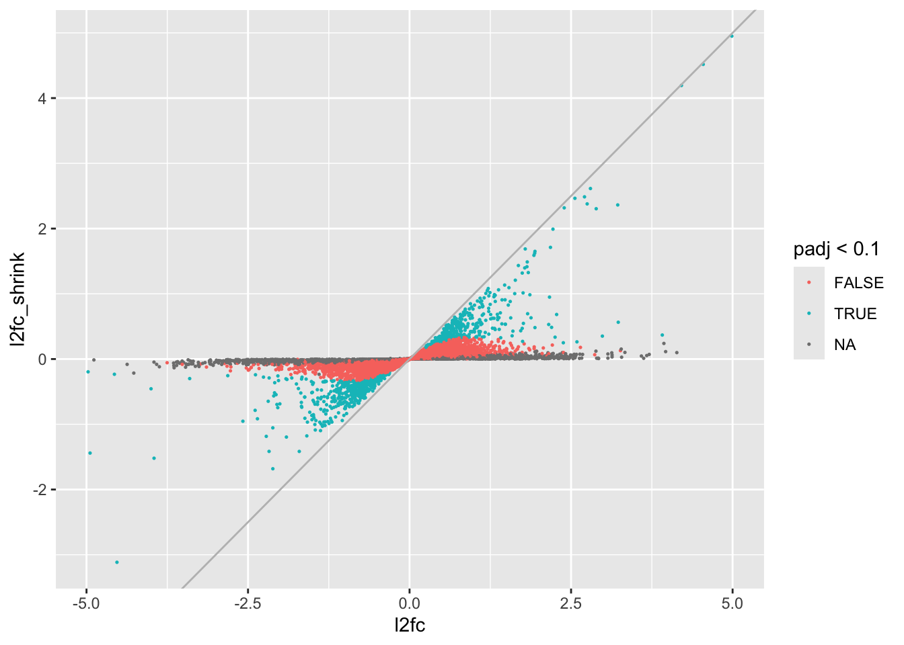
We can see that genes with no adjusted p-value (mostly low count genes lost to independent filtering) have had their log2 fold changes shrunken very close to 0. Slightly more resistant to shrinkage we have genes with p-values, but whose log2 fold changes were not significantly different from 0, and the group of genes that were generally most resistant were the significant ones, although many have had their log2 fold changes altered substantially.
Now to rank significant genes (here by absolute log2 fold change):
res_ranked <- as.data.frame(res_shrink) %>%
filter(padj < 0.1) %>%
arrange(-abs(log2FoldChange))
head(res_ranked, n=10)You can see very clearly here, even in just the top 10 genes, that the ranking by shrunken log2 fold change is different from what we would get ranking by adjusted p-value, which is highly correlated with baseMean.
22.8 Looking at the results
We’ve covered what’s necessary to understand our analysis, we can now look at the results.
Let’s generate results for our three major questions of interest, and also look at baseline differences between ER and KC.
# dose effect in KC
kcdose <- results(dds, contrast=list(c("dose_exposed_vs_control")))
kcdose_shrink <- lfcShrink(dds, type="ashr", coef="dose_exposed_vs_control")using 'ashr' for LFC shrinkage. If used in published research, please cite:
Stephens, M. (2016) False discovery rates: a new deal. Biostatistics, 18:2.
https://doi.org/10.1093/biostatistics/kxw041# dose effect in ER
erdose <- results(dds, contrast=list(c("dose_exposed_vs_control", "populationER.doseexposed")))
erdose_shrink <- lfcShrink(dds, type="ashr", contrast=list(c("dose_exposed_vs_control", "populationER.doseexposed")))using 'ashr' for LFC shrinkage. If used in published research, please cite:
Stephens, M. (2016) False discovery rates: a new deal. Biostatistics, 18:2.
https://doi.org/10.1093/biostatistics/kxw041# interaction effect
doseint <- results(dds, contrast=list(c("populationER.doseexposed")))
doseint_shrink <- lfcShrink(dds, type="ashr", contrast=list(c("populationER.doseexposed")))using 'ashr' for LFC shrinkage. If used in published research, please cite:
Stephens, M. (2016) False discovery rates: a new deal. Biostatistics, 18:2.
https://doi.org/10.1093/biostatistics/kxw041# baseline population differences
popdiff <- results(dds, contrast=list(c("population_ER_vs_KC")))
popdiff_shrink <- lfcShrink(dds, type="ashr", contrast=list(c("population_ER_vs_KC")))using 'ashr' for LFC shrinkage. If used in published research, please cite:
Stephens, M. (2016) False discovery rates: a new deal. Biostatistics, 18:2.
https://doi.org/10.1093/biostatistics/kxw041When we summarize these results, we see a big pattern emerge. Many genes respond very strongly to PCB exposure in the sensitive population, KC, but only a single one in ER. The interaction term reinforces this. Remember that the interaction is the difference in dose response between ER and KC. It indicates that many genes have significantly different responses in ER and KC.
Note that not every gene that is significant in KC but not ER has a significant interaction term. Why? In general there are two reasons. First, power to detect interactions is lower than for main effects. This is probably the main issue here. The second is that in some studies a given gene may actually be responding weakly to treatment similarly across two groups, but in one group the pattern may happen not to be significant (i.e. it is a false negative). You would obviously not expect a significant interaction term in that case. This is probably less of a contributor in this study, as we’ll see when we make heatmaps.
Let’s look at an exemplar gene ENSFHEG00000010510.
First let’s plot the counts using a DESeq2 function, or alternatively make a slightly fancier plot with ggplot2:
plotCounts(dds, "ENSFHEG00000010510", intgroup=c("population", "dose"))data.frame(sampleTable,count=counts(dds,normalized=TRUE)["ENSFHEG00000010510",]) %>%
ggplot(aes(x=dose, y=log(count,10))) +
geom_boxplot(outlier.shape = NA) +
geom_jitter() +
facet_wrap(~ population)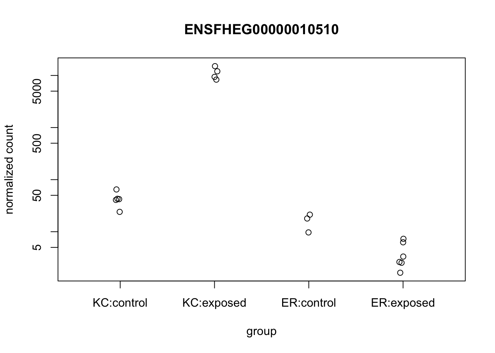
We can see pretty clearly that this gene is upregulated very strongly in KC in response to PCB, but appears to be downregulated in ER. This is a classic case of an interaction, where the response is not just modulated, but changes sign. If we look at the log2 fold changes and adjusted p-values, we see that this gene is significant for all our tests, even baseline population difference.
rbind(
kcdose["ENSFHEG00000010510",],
erdose["ENSFHEG00000010510",],
doseint["ENSFHEG00000010510",],
popdiff["ENSFHEG00000010510",]
)log2 fold change (MLE): dose_exposed_vs_control effect
Wald test p-value: dose_exposed_vs_control effect
DataFrame with 4 rows and 6 columns
baseMean log2FoldChange lfcSE stat pvalue
<numeric> <numeric> <numeric> <numeric> <numeric>
ENSFHEG00000010510 2504.91 8.03942 0.254738 31.55956 1.32571e-218
ENSFHEG00000010510 2504.91 -2.06764 0.432595 -4.77962 1.75623e-06
ENSFHEG00000010510 2504.91 -10.10706 0.502026 -20.13255 3.82781e-90
ENSFHEG00000010510 2504.91 -1.45742 0.337310 -4.32072 1.55519e-05
padj
<numeric>
ENSFHEG00000010510 2.59946e-214
ENSFHEG00000010510 3.98332e-02
ENSFHEG00000010510 7.50556e-86
ENSFHEG00000010510 3.23285e-03To reiterate how our model parameters are working here, we can easily see that if we add the log2 fold change for dose response in KC to the interaction log2 fold change, we get the dose response in ER:
8.03942 + -10.1071[1] -2.06768We can see a similar result in ENSFHEG00000002649, but the population and ER dose response are not significant.
rbind(
kcdose["ENSFHEG00000002649",],
erdose["ENSFHEG00000002649",],
doseint["ENSFHEG00000002649",],
popdiff["ENSFHEG00000002649",]
)log2 fold change (MLE): dose_exposed_vs_control effect
Wald test p-value: dose_exposed_vs_control effect
DataFrame with 4 rows and 6 columns
baseMean log2FoldChange lfcSE stat pvalue
<numeric> <numeric> <numeric> <numeric> <numeric>
ENSFHEG00000002649 115.459 4.9883442 0.309166 16.1348592 1.45138e-58
ENSFHEG00000002649 115.459 -0.0311308 0.353187 -0.0881425 9.29763e-01
ENSFHEG00000002649 115.459 -5.0194749 0.469387 -10.6936761 1.08965e-26
ENSFHEG00000002649 115.459 0.1919752 0.377031 0.5091767 6.10628e-01
padj
<numeric>
ENSFHEG00000002649 5.69174e-55
ENSFHEG00000002649 9.99962e-01
ENSFHEG00000002649 4.27316e-23
ENSFHEG00000002649 8.45269e-01plotCounts(dds, "ENSFHEG00000002649", intgroup=c("population", "dose"))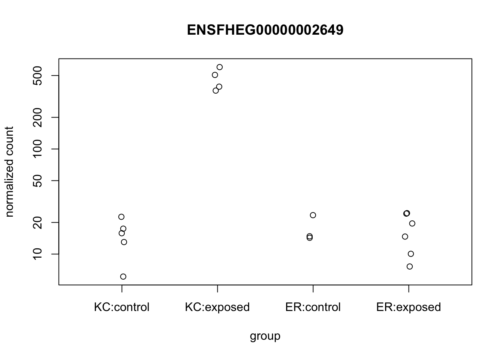
22.8.0.1 PCA
Making a PCA of differentially expressed genes is only somewhat helpful. Because we’re selecting genes that show strong differences between groups, we should expect to see clustering that reflects that. When we pick genes DE for one comparison (say KC dose response) it may be interesting to see what happens with unrelated groups. It doesn’t make sense to make a PCA for the ER response because there’s only one significant gene!
vsd <- vst(dds)
vsd_kcdose <- vsd[which(kcdose$padj < 0.1),]
dat <- plotPCA(vsd_kcdose,returnData=TRUE,intgroup=c("population","dose"))using ntop=500 top features by variancep <- ggplot(dat,aes(x=PC1,y=PC2,col=population, shape=dose))
p <- p + geom_point() +
xlab(paste("PC1: ", round(attr(dat,"percentVar")[1],2)*100, "% variation explained", sep="")) +
ylab(paste("PC2: ", round(attr(dat,"percentVar")[2],2)*100, "% variation explained", sep="")) +
geom_label_repel(aes(label=name))
p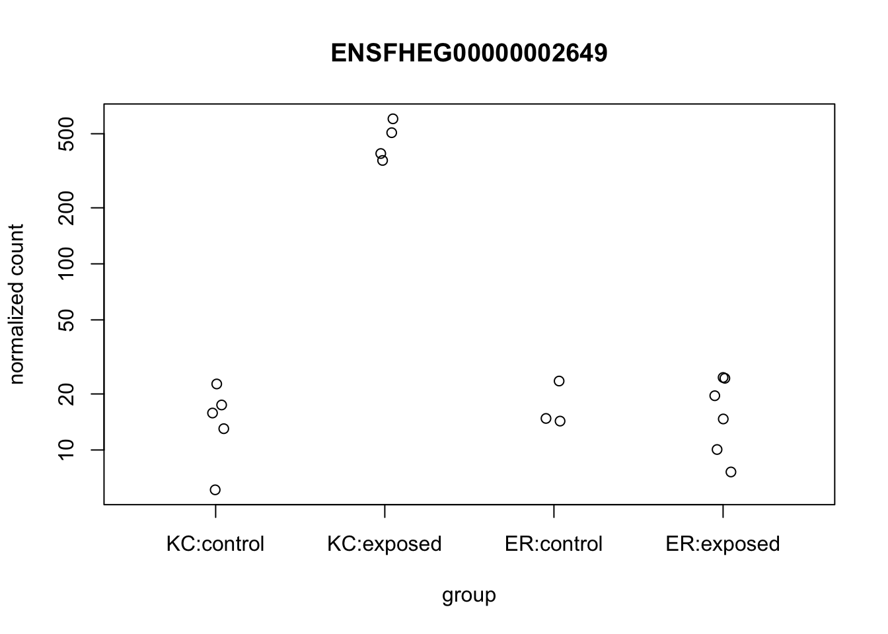
vsd <- vst(dds)
vsd_doseint <- vsd[which(doseint$padj < 0.1),]
dat <- plotPCA(vsd_doseint,returnData=TRUE,intgroup=c("population","dose"))using ntop=500 top features by variancep <- ggplot(dat,aes(x=PC1,y=PC2,col=population, shape=dose))
p <- p + geom_point() +
xlab(paste("PC1: ", round(attr(dat,"percentVar")[1],2)*100, "% variation explained", sep="")) +
ylab(paste("PC2: ", round(attr(dat,"percentVar")[2],2)*100, "% variation explained", sep="")) +
geom_label_repel(aes(label=name))
p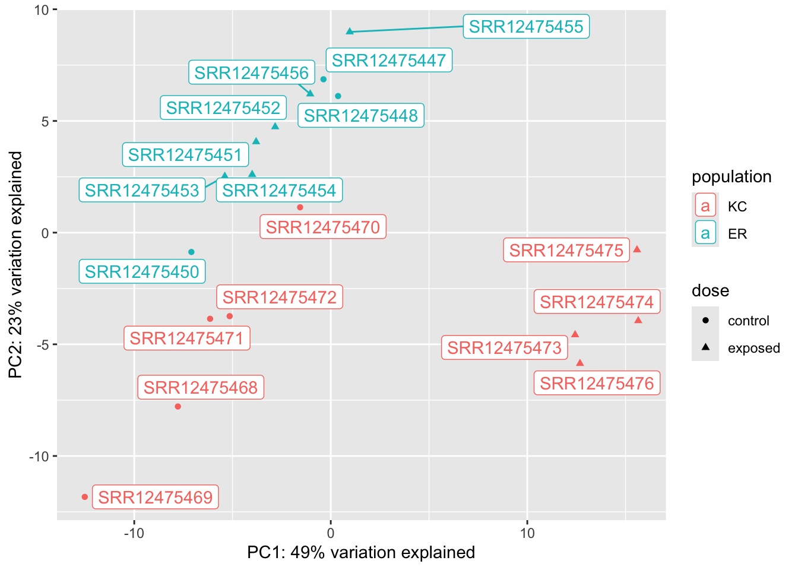
vsd <- vst(dds)
vsd_popdiff <- vsd[which(popdiff$padj < 0.1),]
dat <- plotPCA(vsd_popdiff,returnData=TRUE,intgroup=c("population","dose"))using ntop=500 top features by variancep <- ggplot(dat,aes(x=PC1,y=PC2,col=population, shape=dose))
p <- p + geom_point() +
xlab(paste("PC1: ", round(attr(dat,"percentVar")[1],2)*100, "% variation explained", sep="")) +
ylab(paste("PC2: ", round(attr(dat,"percentVar")[2],2)*100, "% variation explained", sep="")) +
geom_label_repel(aes(label=name))
p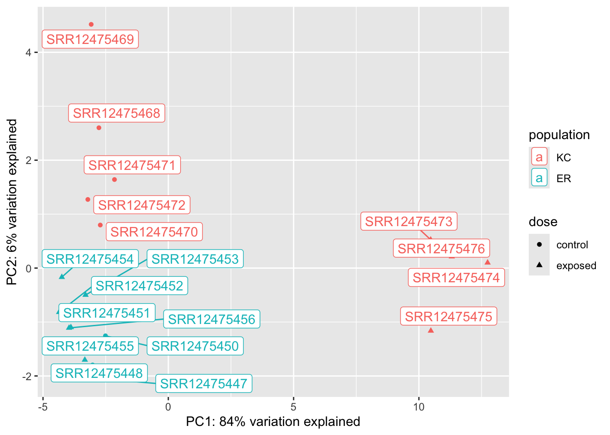
We can see from these plots that of our four groups, it’s the KC exposed group that stands out the most. In the KC dose-response plot the first axis explains 49% of the variation and separates KC exposed from everything else. The pattern is the same for the interaction genes, except PC1 explains 87% of the variation. (The high fraction of variance explained is not surprising, as we selected the genes because they show these patterns in the first place.) We looked at two genes, and they seem to suggest that KC responds to PCB exposure by strongly upregulating some genes, but ER does not. Is that what’s generally driving this trend? A heatmap will be a better way to examine this.
22.8.0.2 Heatmaps
Heatmaps are a tricky way to visualize expression data. Let’s plot the 50 genes that respond most strongly in KC.
Let’s get the data ready first.
library(pheatmap)
# create a metadata data frame to add to the heatmap
df <- data.frame(colData(ddsHTSeq)[,c("population","dose")])
rownames(df) <- colnames(ddsHTSeq)
colnames(df) <- c("population","dose")
# transform the count data
vsd <- vst(dds)Make the plot:
# pull the top 50 genes by shrunken log2 fold change
top50 <- kcdose_shrink %>%
data.frame() %>%
filter(padj < 0.1) %>%
arrange(-abs(log2FoldChange)) %>%
rownames %>%
head(n=50)
# make the heatmap
pheatmap(
assay(vsd)[top50,],
cluster_rows=TRUE,
show_rownames=TRUE,
cluster_cols=TRUE,
annotation_col=df
)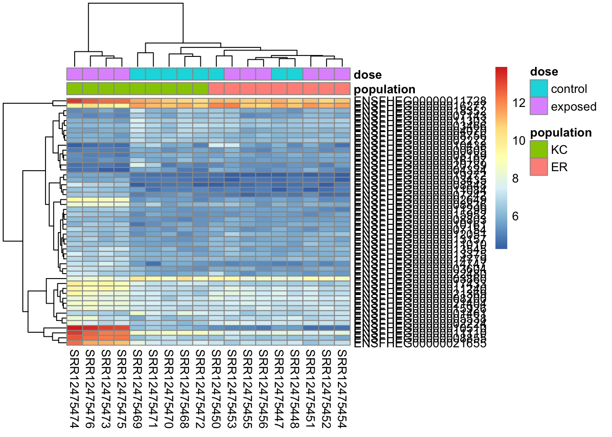
With this plot we can see that our general impression mostly holds up. the majority of genes show a pattern of responding to exposure by increasing expression in KC, but not responding in ER (there are some that d. We also have a block of genes that are down-regulated in KC in response to exposure, but don’t respond in ER. This plot is a bit messy though, and genes with similar expression patterns are not clustering together. The clustering is performed on Euclidean distances by default. Average differences in expression contribute to the Euclidean distance, so genes with drastically different expression levels will tend to cluster together, regardless of whether they show similar treatment responses. Using Spearman correlation (clustering_distance_rows="correlation"), we’ll get better clustering by pattern. Even if we cluster better by the response to treatments, the colors will still be impacted by large mean differences in expression, making the plot look messy. We can try different ways to rescale the expression values to make a more impactful visualization. If we choose to use a heatmap in any given study, it’s important to remember that heatmaps are a qualitative view of the data, and our design choices are somewhat arbitrary. How we choose to order the genes and samples, and how we scale the data can have a big effect on the message the figure communicates.
This clusters better by expression pattern, but overall differences in expression still make it messy looking.
pheatmap(
assay(vsd)[top50,],
cluster_rows=TRUE,
show_rownames=TRUE,
cluster_cols=TRUE,
annotation_col=df,
clustering_distance_rows="correlation"
)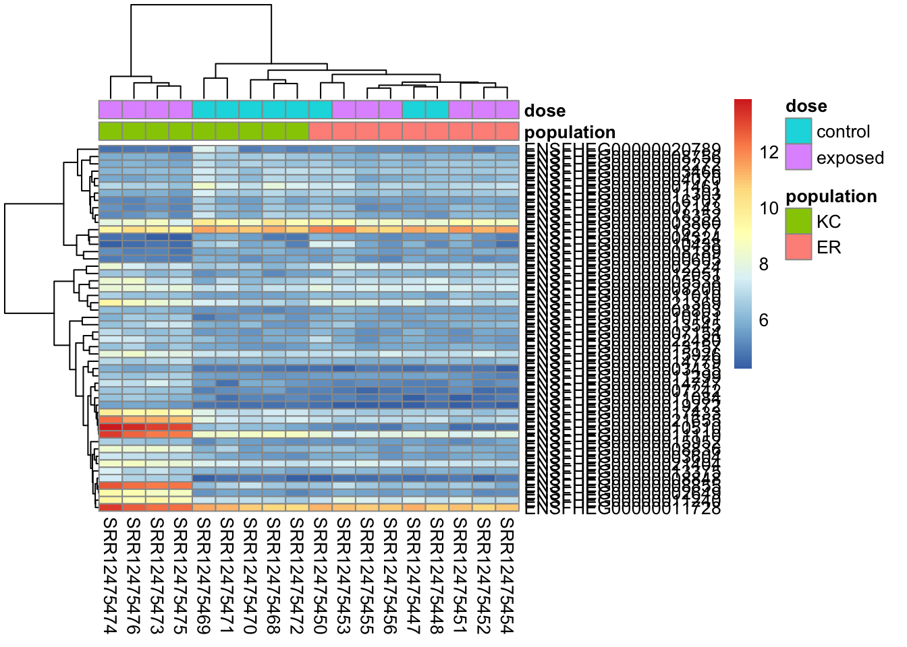
We can rescale the transformed counts by overall expression level to try to make it a bit clearer.
rescaled <- assay(vsd) - rowMeans(assay(vsd))
pheatmap(
rescaled[top50,],
cluster_rows=TRUE,
show_rownames=TRUE,
cluster_cols=TRUE,
annotation_col=df,
clustering_distance_rows="correlation"
)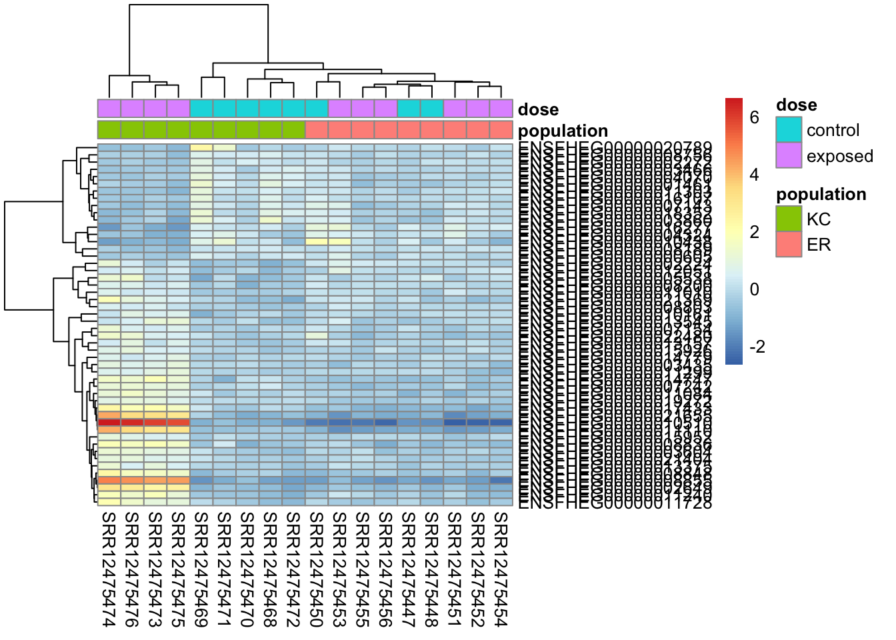
We can similarly rescale by KC control mean transformed counts, as this is the closest thing we have to reference group in these samples.
rescaled <- assay(vsd) - rowMeans(assay(vsd)[, dds$population=="KC" & dds$dose=="control"])
pheatmap(
rescaled[top50,],
cluster_rows=TRUE,
show_rownames=TRUE,
cluster_cols=TRUE,
annotation_col=df,
clustering_distance_rows="correlation"
)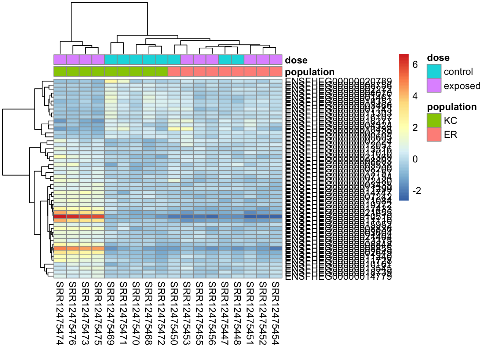
22.8.1 The MA plot
A last plot we should cover here is the MA plot. This is a plot of log2 fold changes as a function of overall mean expression level. This will give us yet another impression of the overall trends in the data. It’s also a good QC step. You expect to see the bulk of genes not differentially expressed, and so their log2 fold changes should cluster around 0 on the Y-axis. If the bulk of the distribution has shifted, this can be a sign that normalization has failed and that samples have not been put on a common footing for DE analysis. Of course, if normalization has failed, it’s likely because transcriptional profiles are so dramatically different that a different approach altogether should be taken to analyzing them, rather than direct comparison in a DE analysis.
DESeq2 has a nice function for making MA plots. Blue points are significant, gray are not. Triangles at the edges are out of the y-axis bounds. The y-axis bounds are determined automatically, and may be less than ideal and need changing. Keep an eye on them as you look through the following plots.
plotMA(kcdose)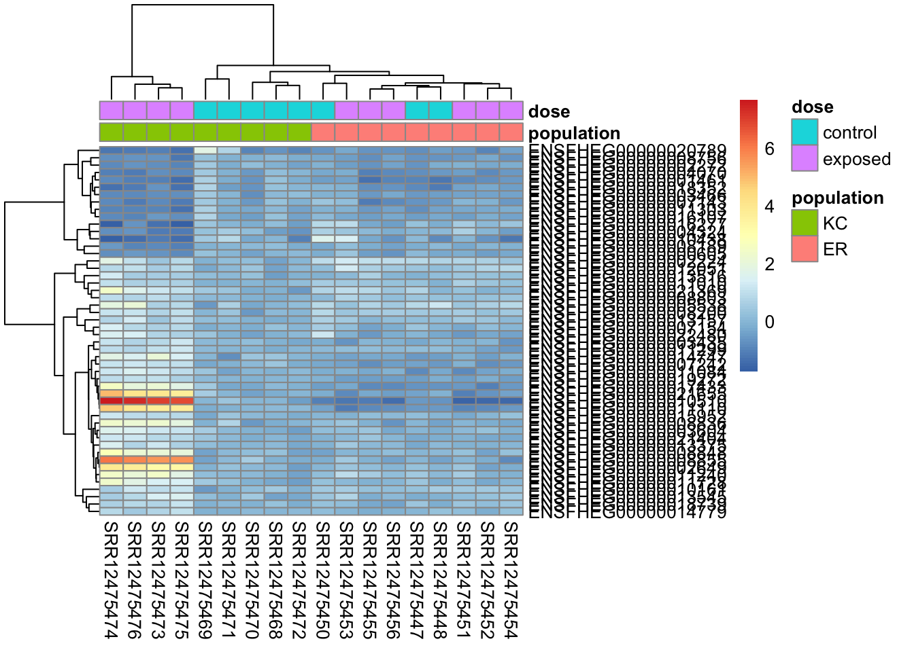
plotMA(erdose)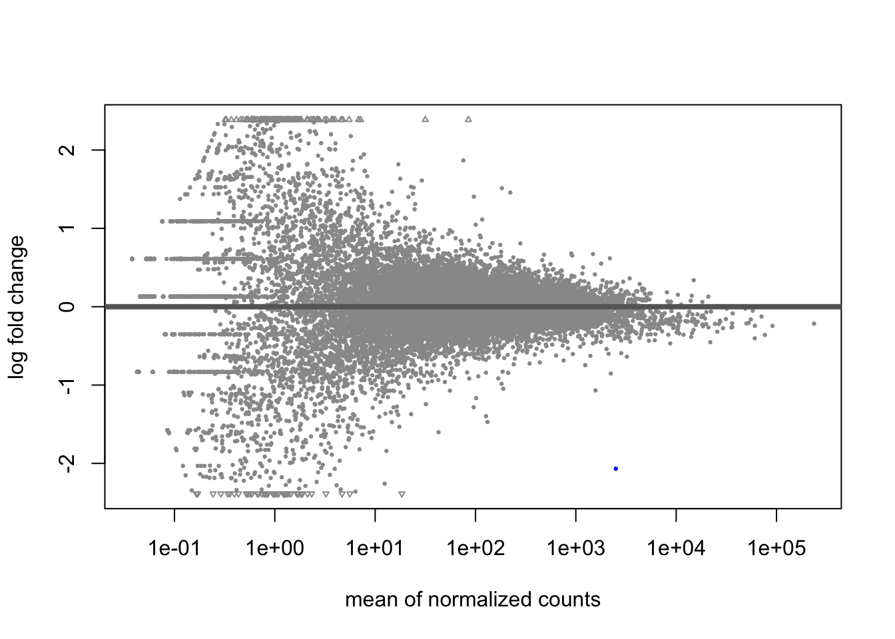
plotMA(doseint)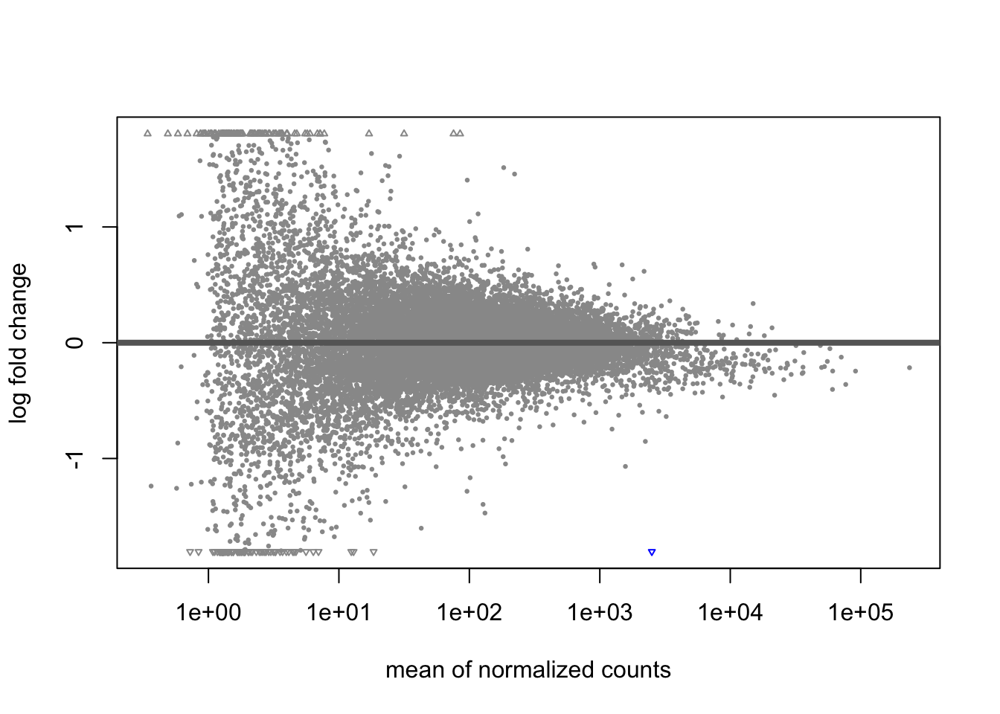
plotMA(popdiff)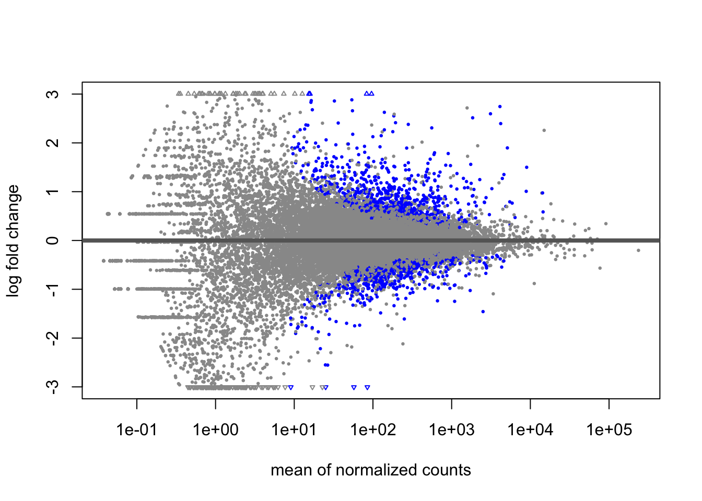
We can also make them with the shrunken log2 fold changes. As we saw before, the genes that are significant tend to resist shrinkage more. Those with low expression levels have little signal for a large fold-change in expression and shrink the most.
plotMA(kcdose_shrink)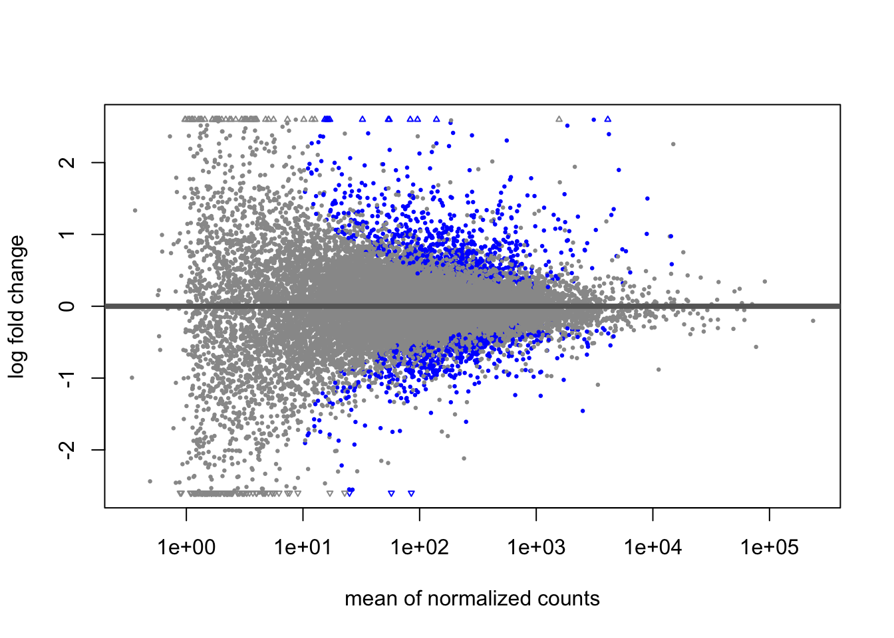
plotMA(erdose_shrink)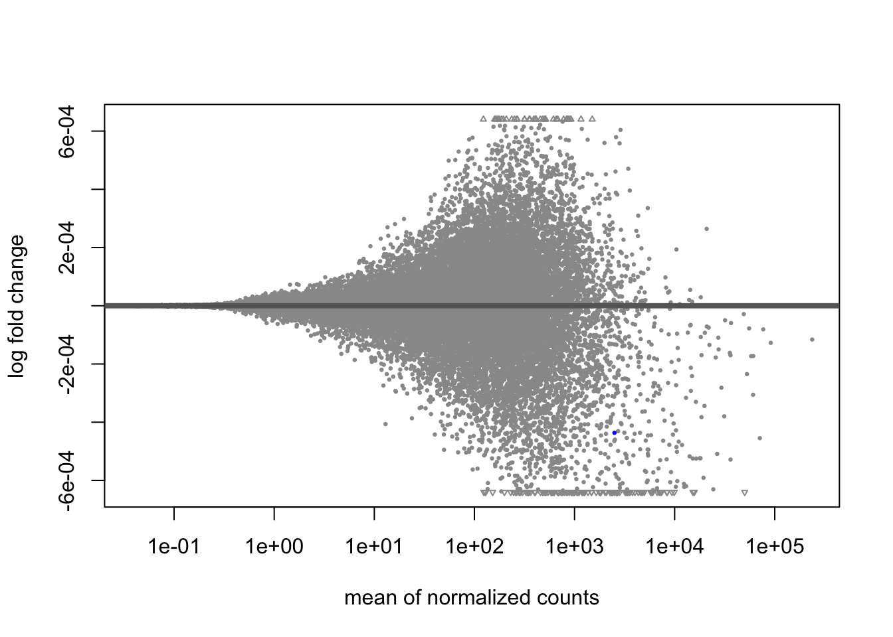
plotMA(doseint_shrink)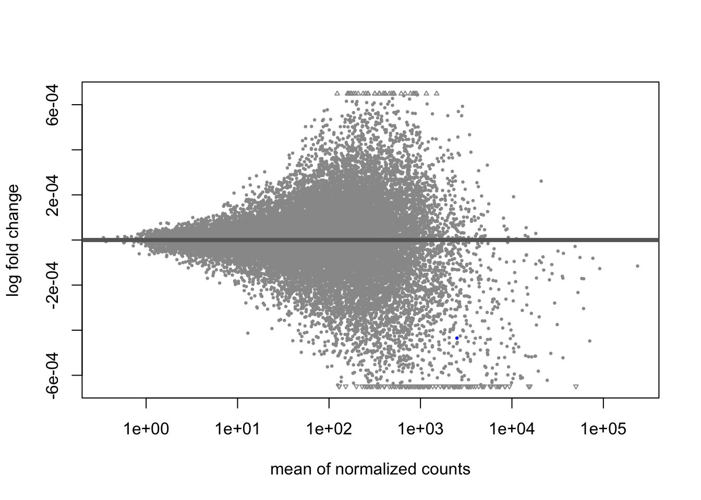
plotMA(popdiff_shrink)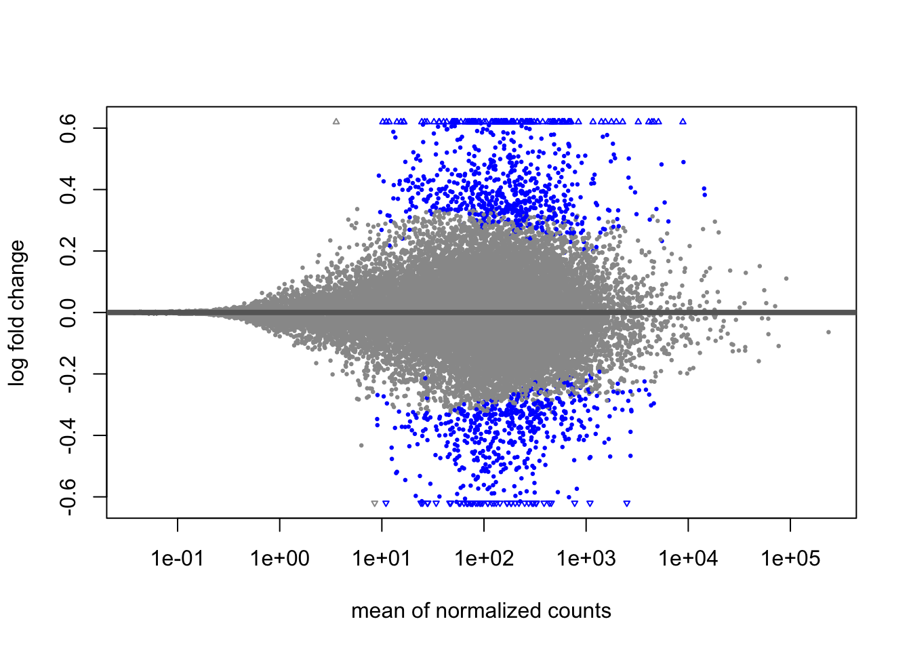
22.9 Conclusion
We’ve looked at our data from a high level perspective. We can see a pretty convincing pattern where the sensitive KC population responds to PCB by altering regulation of many genes, but in ER we largely see no response. The exception is a single gene which appears to be downregulated in ER and upregulated in KC. The story in the manuscript is framed as a case of tolerance coming from ignoring pollutants, and toxicity arising from dysregulation of the Aryl hydrocarbon receptor signaling pathway in response to toxicants. The overall expression pattern is a big part of this, but how did the authors come to point to AHR signaling? That involves incorporating functional information about the genes, which we’ll talk about that in the next chapter.